This week has three parts. On Monday we finish the tools for describing a single distribution: the normal distribution, \(z\)-scores, and what they let us say about outliers. On Wednesday we use those tools on a new kind of distribution, the distribution of a statistic, which is the bridge from describing data to drawing conclusions from it. On Friday we start probability, the language that makes that bridge precise.
Two real data sets run through the first half of this week.
Female student heights. A survey of 379 college students recorded each student’s height and gender; 262 of them are women.
| HEIGHT | GENDER |
|---|---|
| 56 | Female |
| 57 | Female |
| 58 | Female |
| 60 | Female |
| 60 | Female |
| … | … |
The file is sorted from shortest to tallest, which is why the first rows are all short. \(n = 262\).
Central Park in January. The National Weather Service has recorded the mean temperature in Central Park, New York, for every month since 1869.
| YEAR | JAN | FEB | MAR | DEC | ANNUAL |
|---|---|---|---|---|---|
| 1869 | 35.1 | 34.5 | 34.8 | 34.7 | 51.4 |
| 1870 | 37.5 | 31.3 | 34.1 | 34.1 | 53.6 |
| 1871 | 28.3 | 30.2 | 44.2 | 29.2 | 51.1 |
| 1872 | 28.8 | 29.9 | 30.5 | 26.7 | 51 |
| 1873 | 28.6 | 29.5 | 35.7 | 36.5 | 51 |
| … | … | … | … | … | … |
\(n = 150\) years, 1869 to 2018. We use only the January column.
Here are three distributions that have nothing to do with each other: the heights of the 262 female students in our running data set, the mean January temperature in Central Park, New York, in each of the 150 years from 1869 to 2018, and the average of ten rolls of a fair die.
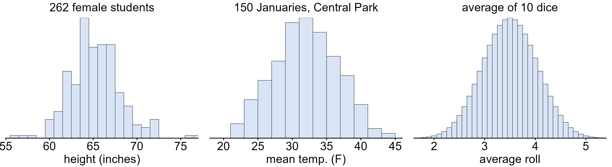
Each one is single-peaked, symmetric and bell shaped: most values pile up near the middle, and they thin out at the same rate on both sides. This shape turns up so often that it has a name.
Below, the same three distributions each have a normal curve drawn over them. It is the same shape each time; only its center and its spread change.
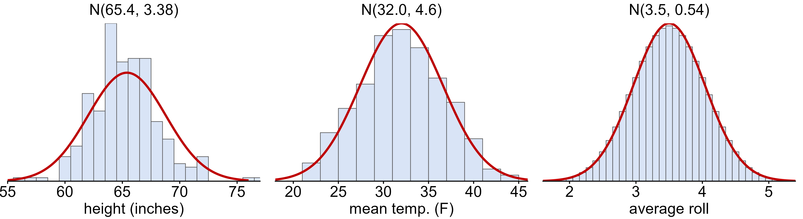
The heights follow the curve least closely: they are lumpier, and a few students sit well out in the tails. No real data set is exactly normal. The normal curve is a model, and the question is always whether it is close enough to be useful.
Every normal curve is pinned down by just two numbers, its parameters. We write
\[X \sim N(\mu, \sigma)\]
for a variable that is normally distributed with mean \(\mu\) and standard deviation \(\sigma\). The titles on the curves above are exactly this: the heights are roughly \(N(65.4, 3.38)\) and the January temperatures roughly \(N(32.0, 4.6)\).
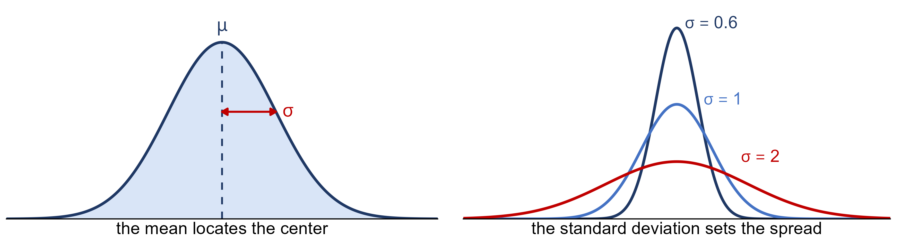
Greek letters are for the population (\(\mu\), \(\sigma\)) and Roman letters for a sample (\(\bar{x}\), \(s\)), the same convention as parameters and statistics in the Weeks 4-5 notes.
Why would one curve matter so much? Look at what happens when we average dice. One die is flat: every face is equally likely. The average of two dice is already peaked in the middle, and the average of five or ten is a bell.
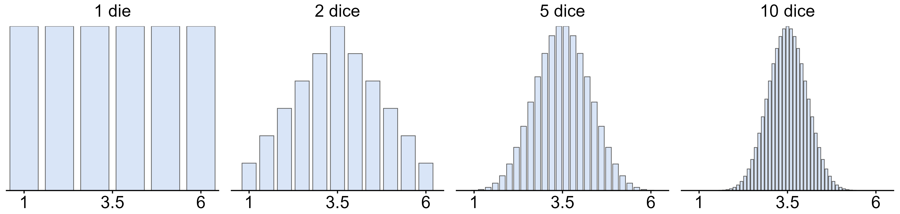
What exactly is the smooth curve we keep drawing over histograms? A histogram’s bars are counts inside intervals that we chose. A continuous variable, such as a temperature, has no natural intervals, so in theory its distribution is better drawn as a smooth curve.
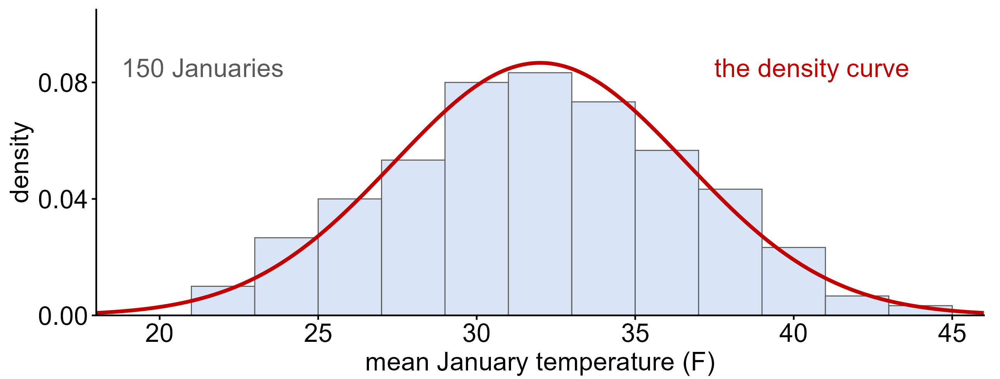
The bars are the 150 Januaries we actually recorded. The curve is the distribution behind them, a model of what January in Central Park looks like in the long run. The vertical axis is labelled density, and it is worth getting a rough feel for what that means.
The January temperatures have \(\bar{x} = 32.0\)°F and \(s = 4.6\)°F. What fraction of Januaries averaged between 28°F and 36°F?
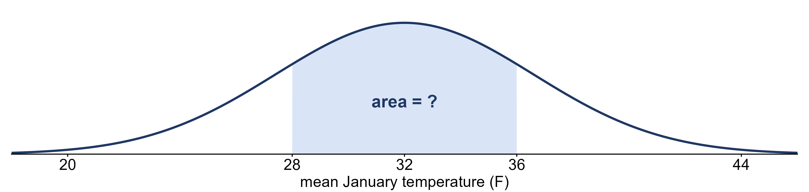
On a density curve, the area under the curve over an interval is the proportion of values in that interval. The shaded area works out to 0.62. In the actual data, 92 of the 150 Januaries fall in that range, a proportion of 0.61. The model and the data agree closely.
That gives a loose working idea of probability density:
We will make this precise when we reach probability on Friday and
continuous random variables in Week 7. For now: height means
crowded, area means how many. Everything else about the normal
distribution this week, including the empirical rule, the \(z\)-table and pnorm, is a way
of finding areas under this curve.
There are infinitely many normal curves, one for every choice of \(\mu\) and \(\sigma\). One of them gets a name of its own.
Every normal distribution is a shifted and stretched copy of this one. If we measure how far each value is from \(\mu\) in units of \(\sigma\), any normal curve turns into \(N(0, 1)\). Below, the heights of the 262 female students are drawn twice: once in inches, and once as the number of standard deviations each height is from the mean.
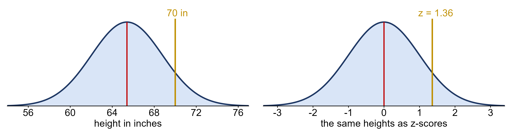
It is the same curve; only the labels on the axis change. That “number of standard deviations from the mean” is called a \(z\)-score, and it is the next topic.
The twenty US breakfast cereals from Week 3, with their sodium and sugar content.
| Cereal | Sodium | Sugar | Type |
|---|---|---|---|
| Frosted Mini Wheats | 0 | 11 | A |
| Raisin Bran | 340 | 18 | A |
| All Bran | 70 | 5 | A |
| Apple Jacks | 140 | 14 | C |
| Captain Crunch | 200 | 12 | C |
| … | … | … | … |
\(n = 20\) cereals.
How do we say how far a value sits from the center of its distribution? So far, “far from the center” has been measured in the units of whatever we happened to be measuring. That makes it impossible to compare across variables. Consider two samples, each with \(n = 20\) observations:
Which observation is more extreme? The cereal is \(123\) mg above its mean and the student only \(16\) points above theirs, but points and milligrams are different scales, so the two raw deviations can’t be compared. The fix is to measure each deviation in standard deviations of its own variable:
\[\text{student: } \frac{90 - 74}{8} = \frac{16}{8} = 2.0 \qquad\qquad \text{cereal: } \frac{290 - 167}{77} = \frac{123}{77} \approx 1.6\]
The student is 2.0 standard deviations above the mean and the cereal only 1.6, so the exam score is the more extreme of the two, even though its raw deviation is far smaller. On a normal curve this is the natural yardstick, because \(\sigma\) is exactly what sets the curve’s spread.
Recall the twenty US breakfast cereals from the Week 3 notes, with mean sodium \(\bar{x} = 167\) mg and standard deviation \(s \approx 77\) mg. The cereal furthest above the mean is Raisin Bran, at 340 mg.
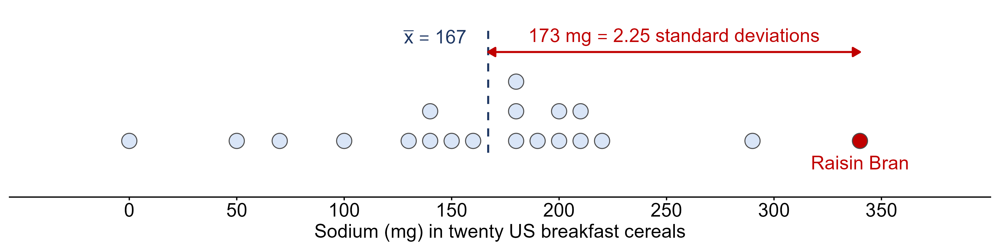
Raisin Bran is \(340 - 167 = 173\) mg above the mean, which is \(173/77 \approx 2.25\) standard deviations. Dividing a deviation by the standard deviation strips the units off, and what is left means the same thing no matter what was measured. That number is the \(z\)-score:
\[z = \frac{x - \bar{x}}{s} = \frac{\text{observation} - \text{mean}}{\text{standard deviation}}\]
A positive \(z\) is above the mean and a negative \(z\) is below it. A cereal at \(z = 2.25\) and a student at \(z = 2.25\) are equally unusual within their own distributions, even though one is milligrams and the other is exam points.
For a population the \(z\)-score uses the parameters, \(z = (x - \mu)/\sigma\); for a sample it uses the statistics, \(z = (x - \bar{x})/s\). To go the other way, \(x = \bar{x} + z\,s\). Converting every value of a variable to a \(z\)-score is called standardizing, and standardizing a normal variable gives the standard normal distribution, \(Z \sim N(0, 1)\).
Our running data set this week is the heights of the 262 female
students in heights.csv, with \(\bar{x} = 65.4\) inches and \(s = 3.38\) inches. A student who is 70
inches tall has
\[z = \frac{70 - 65.4}{3.38} = 1.36\]
She is 1.36 standard deviations above the mean: the gold line on the standard normal picture above. Standardizing relabels the axis. It does not move a single student.
This one is Try It 6.2 from the textbook. Jerome averages 16 points a game with a standard deviation of 4 points, so \(X \sim N(16, 4)\). One night he scores 10 points. Fill in the blanks: \(x = 10\) is ____ standard deviations to the ____ (right or left) of the mean ____.
\[z = \frac{10 - 16}{4} = -1.5\]
so \(x = 10\) is 1.5 standard deviations to the left of the mean, 16. A negative \(z\)-score always means below the mean.
The table below gives carbon dioxide emissions per person (metric tons) for the 28 member states of the European Union, from the World Bank.
| Country | Code | CO2 per person (metric tons) |
|---|---|---|
| Austria | AUT | 8.0 |
| Belgium | BEL | 10.0 |
| Bulgaria | BGR | 6.0 |
| Croatia | HRV | 4.7 |
| Cyprus | CYP | 7.0 |
| Czech Republic | CZE | 10.7 |
| Denmark | DNK | 8.3 |
| Estonia | EST | 13.7 |
| Finland | FIN | 11.5 |
| France | FRA | 5.6 |
| Germany | DEU | 9.1 |
| Greece | GRC | 7.7 |
| Hungary | HUN | 5.1 |
| Ireland | IRL | 8.8 |
| Italy | ITA | 6.7 |
| Latvia | LVA | 3.6 |
| Lithuania | LTU | 4.4 |
| Luxembourg | LUX | 21.4 |
| Malta | MLT | 6.2 |
| Netherlands | NLD | 11.0 |
| Poland | POL | 8.3 |
| Portugal | PRT | 5.0 |
| Romania | ROM | 3.9 |
| Slovak Republic | SVK | 6.7 |
| Slovenia | SVN | 7.5 |
| Spain | ESP | 5.8 |
| Sweden | SWE | 5.6 |
| United Kingdom | GBR | 7.9 |
The mean is \(\bar{x} \approx 7.9\) and the standard deviation \(s \approx 3.6\) metric tons.
Every normal curve has the same proportions once distance is measured in standard deviations.
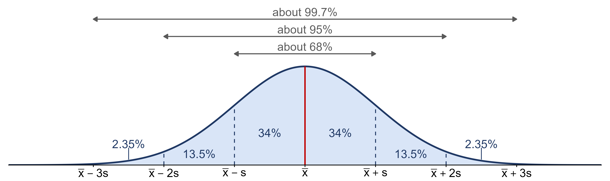
Because the curve is symmetric, the rule splits into pieces: 34% between the mean and one standard deviation on each side, 13.5% between one and two, and 2.35% between two and three, leaving 0.15% beyond three on each side. Putting pieces together answers most questions of this kind: for example \(50\% + 34\% = 84\%\) of values are below \(\bar{x} + s\), and \(50\% + 34\% + 13.5\% = 97.5\%\) are below \(\bar{x} + 2s\).
The rule is only for bell-shaped distributions. Applied to a skewed distribution it gives the wrong answers.
Practice: estimate the standard deviation of each curve.
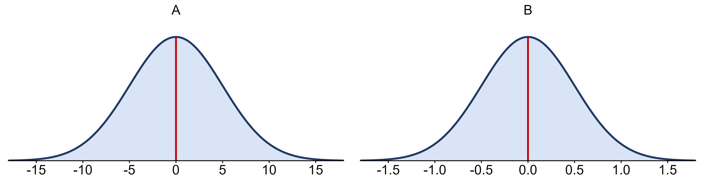
A: \(\sigma \approx 5\). B: \(\sigma \approx 0.5\). Step out from the center until you have captured roughly the middle two thirds of the curve (68%) and read that distance off the axis. The two pictures are the same shape, so the shape alone tells you nothing about the spread: always check the axis.
Exam scores in a class are roughly bell shaped with \(\bar{x} = 74\) and \(s = 8\) points. What percentage of scores falls in each shaded region?
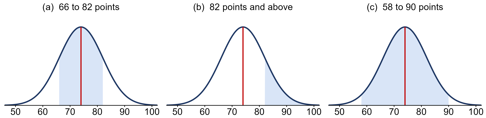
Part (b) used the empirical rule and symmetry together. Notice that the student who scored 90 in “Which observation is more extreme?” is exactly 2 standard deviations up: only about 2.5% of the class did better.
The empirical rule gives a natural definition of “unusual” for bell-shaped data.
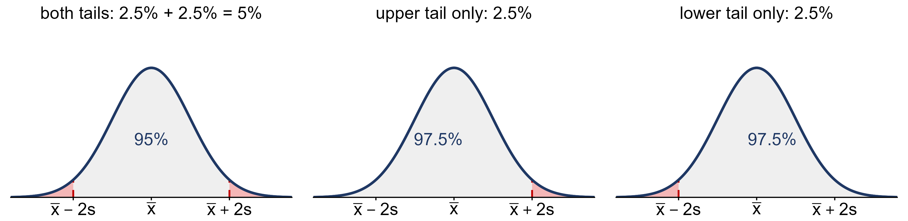
Ask first whether you care about one direction or both: about 2.5% of values lie beyond \(+2s\) alone, and 5% beyond \(\pm 2s\) together. By this rule Luxembourg (\(z = 3.75\)) is an outlier, and a large one: beyond 3 standard deviations is only about 0.15% of a bell-shaped distribution in each tail.
You already know the \(1.5 \times IQR\) rule from Week 3. Do the two rules flag the same students?
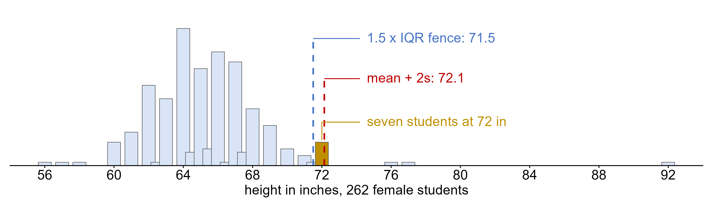
Not here. The IQR rule’s upper fence is \(Q_3 + 1.5 \times IQR = 71.5\) inches and it flags 13 of the 262 women; the \(\pm 2s\) fence is \(\bar{x} + 2s = 72.1\) inches and it flags only 6. The seven students at 72 inches are outliers under one rule and ordinary under the other. The single 92-inch value (almost certainly a data-entry error) drags the mean up and inflates \(s\), which pushes the \(2s\) fence out past the 72s. The quartiles barely notice one extreme value; the mean and standard deviation always do.
Neither rule is “the truth”. An outlier is a value worth a second look, not a value to delete.
Our 70-inch student has \(z = 1.36\). What percentage of the women are shorter than she is? If her \(z\)-score were exactly 1, the empirical rule would give \(50\% + 34\% = 84\%\). But 1.36 is not 1, 2 or 3, and the empirical rule only knows whole standard deviations. For anything in between we need the actual area under the curve to the left of \(z\).
Because every normal distribution has the same areas once converted to \(z\), one table covers all of them. For decades that table was how it was done:
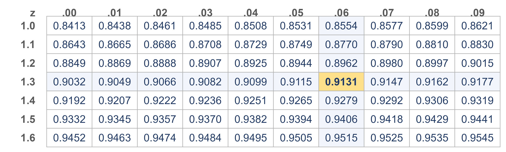
Row 1.3, column .06 gives \(0.9131\), so about 91% of the women are shorter than 70 inches. (In the actual data it is 243 of 262, or 92.7%, which is close: the heights are only approximately normal.) The area to the right of \(z\) is one minus the table value, here \(1 - 0.9131 = 0.0869\).
Today software does the lookup. In R:
pnorm(1.36)
returns 0.9131, the same number as the table.
pnorm(70, mean = 65.4, sd = 3.38) skips the \(z\)-score step entirely.qnorm(0.90)
returns 1.28, so 90% of any normal distribution lies below \(\bar{x} + 1.28s\). For our heights that is
\(65.4 + 1.28(3.38) = 69.7\)
inches.The normal calculator on the course tools site (Resources → Tools/Calculators) does both. Either way, you still have to know which number you are asking for.
We often need to change the units of measurement of a variable, such as from Fahrenheit to Celsius, feet to meters, or dollars to euros. Changing a variable like this is called a transformation, and transformations come in two kinds.
What a linear transformation does to the summaries:
Converting our 262 heights to centimeters multiplies every value by 2.54, so \(a = 2.54\) and \(b = 0\).
Both the deviation and the standard deviation were multiplied by 2.54, and the factor cancels. A \(z\)-score has no units, so it cannot depend on which units you chose. That is the whole reason a \(z\)-score lets us compare an exam score with a breakfast cereal.
A common mistake is to think that standardizing a skewed variable straightens it out. It does not: standardizing is a linear transformation, so it moves the center to 0 and sets the spread to 1 and leaves the shape exactly as it found it.
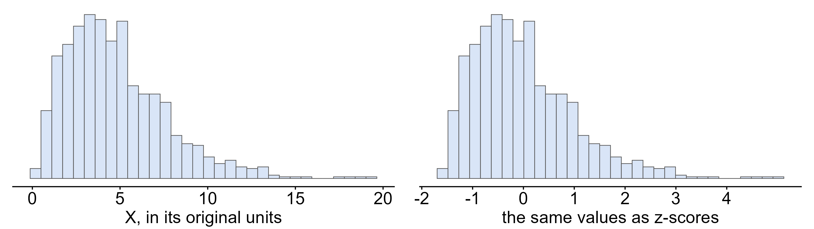
Both pictures show the same 1,000 values; the right-hand axis just reads in standard deviations. It also means the empirical rule and the \(\pm 2s\) outlier rule still do not apply to the picture on the right.
On Monday every distribution was a distribution of data: exam scores, sodium, heights. Today we look at a distribution of a statistic, and it turns out to be the most important distribution in the course.
Recall the distinction from the Weeks 4-5 notes. A parameter is a number that describes the population, such as its mean \(\mu\); a statistic is a number computed from a sample, such as \(\bar{x}\). We almost never know the parameter, so we use the statistic to estimate it.
To see what happens, let’s pretend for a moment that we do know the population. Treat the 262 female students as the whole population, with \(\mu = 65.4\) inches and \(\sigma = 3.38\) inches, and take a random sample of \(n = 20\) of them. The first sample has \(\bar{x}_1 = 66.33\) inches. A second random sample of 20 gives \(\bar{x}_2 = 64.85\) inches.
Neither sample mean equals \(\mu\), and they don’t equal each other. Nothing went wrong: a different sample contains different people, so it gives a different answer. This is the sampling error from the Weeks 4-5 notes, the difference between a statistic and the parameter it estimates, caused purely by which units happened to be chosen.
Now imagine repeating the process over and over: draw a sample of 20, compute \(\bar{x}\), write it down, and start again. Below are the means of 10,000 such samples.
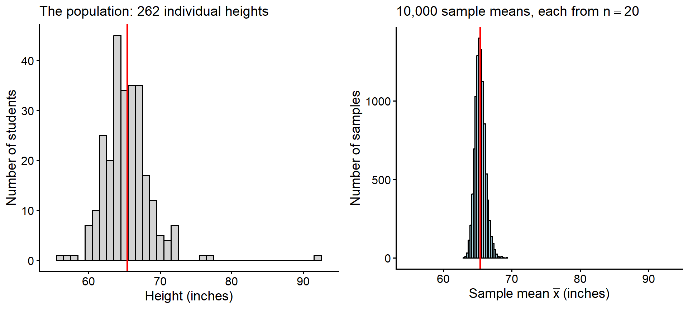
The name is new, but the idea is not. In Week 3 we saw that a sample mean moves from one sample to the next (sampling variation) and measured that movement with the standard error, \(SE = s/\sqrt{n}\): the standard error is simply the standard deviation of the sampling distribution. And the histograms in “A bigger sample does not fix bias” in the Weeks 4-5 notes, 5,000 simple random samples against 5,000 Rec Center surveys, were sampling distributions: each bar counted how many of the repeated surveys gave a particular estimate.
The two histograms are drawn on the same axis on purpose. Compare them:
A note on the center. A sampling distribution is centered at the population parameter only if the statistic is unbiased. A statistic is unbiased when the mean of its sampling distribution equals the parameter it estimates. The sample mean \(\bar{x}\) from a random sample is unbiased, which is why the histogram above sits right on \(\mu\). It is not automatic:
- a biased design moves the whole sampling distribution. The Rec Center surveys in the Weeks 4-5 notes piled up around 75% when the truth was 40%, however many times they were repeated;
- some statistics are biased even with random sampling. Computing the sample variance by dividing by \(n\) instead of \(n - 1\) (Week 3) gives a sampling distribution centered slightly below \(\sigma^2\).
Bias moves the center of the sampling distribution; the standard error describes its spread.
The spread of a sampling distribution gets its own name, because it is exactly the “how far off might my estimate be” that we care about.
For our samples of 20, \(SE = 3.38/\sqrt{20} = 0.755\) inches. The standard deviation of the 10,000 simulated means is 0.756, so the formula matches what actually happened.
Keep the two standard deviations straight. \(\sigma = 3.38\) describes how far a single student’s height typically falls from \(\mu\). \(SE = 0.76\) describes how far a whole sample’s average typically falls from \(\mu\).
The \(\sqrt{n}\) in the denominator means a bigger sample gives a smaller standard error, but slowly. With \(n = 80\), four times as many students, \(SE = 3.38/\sqrt{80} = 0.378\) (simulated: 0.377): quadrupling the sample only halves the error. And remember from the Weeks 4-5 notes that a bigger sample shrinks the standard error but does nothing about bias.
Because the sampling distribution of \(\bar{x}\) is bell shaped, the empirical rule applies to it. About 95% of sample means land within 2 standard errors of \(\mu\). In the simulation, 95.1% of the 10,000 sample means did.
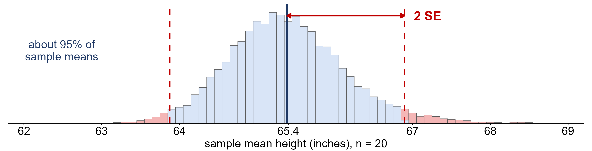
For samples of 20 heights the margin of error is \(2(0.755) = 1.51\) inches: about 95% of samples give an \(\bar{x}\) within \(65.4 \pm 1.5\) inches. A sample mean further than that from \(\mu\) would be an outlier in the sampling distribution, and therefore rare.
Don’t confuse the two errors. The sampling error is how far this particular estimate happens to be from the parameter, and we never know it, because we don’t know the parameter. The margin of error is a bound on how large the sampling error is likely to be, and we can compute it before we have even taken the sample. When a poll reports “52% support, with a margin of error of 3 percentage points”, this is the number they mean.
The margin of error also tells us when a result is too big to blame on chance.
Suppose someone hands you a random sample of 20 students with a mean height of 70.33 inches and claims it came from our population of women. If it did, \(\bar{x}\) should almost certainly be within \(65.4 \pm 1.5\) inches. Instead it is
\[z = \frac{70.33 - 65.4}{0.755} = 6.5\]
standard errors away. Ordinary sampling variation essentially never produces that, so the result is statistically significant: this sample almost certainly did not come from the female students. (It didn’t. It is a random sample of the 117 male students in the same file.)
A sample mean of 66.0 inches, on the other hand, is \((66.0 - 65.4)/0.755 = 0.8\) standard errors from \(\mu\). That is well within the range of ordinary variation, so it is not statistically significant. It could easily be a sample of our women.
Two cautions that will come up again and again:
This week’s version of the idea is informal. From Week 8 on, confidence intervals and hypothesis tests make it precise, but the logic never changes: compare what you saw with how much variation chance alone would produce.
Look again at two statements from this week. On Wednesday: about 95% of samples land within 2 standard errors of \(\mu\). And in the significance example: a sample that far out would be very unlikely to happen by chance. But we only ever take one sample. So what do “95%” and “unlikely” actually mean?
They describe what would happen if we repeated the random sampling many, many times. Statements about the long run of a chance process are statements of probability, and statistics needs a precise language for them.
When every outcome in the sample space is equally likely,
\[P(A) = \frac{\text{number of ways } A \text{ can happen}}{\text{total number of outcomes}}\]
so for a fair die \(P(\text{even}) = 3/6 = 0.5\) and \(P(\text{not a six}) = 5/6\).
The table below classifies the 379 students in
heights.csv by gender and by whether they are at least 70
inches tall. If we pick one student at random, every student is equally
likely, so each probability is just a count divided by 379.
| Gender | At least 70 in | Under 70 in | Total |
|---|---|---|---|
| Female | 19 | 243 | 262 |
| Male | 87 | 30 | 117 |
| Total | 106 | 273 | 379 |
Let \(F\) be the event that the student is female and \(T\) that the student is at least 70 inches tall. Then \(P(T) = 106/379 \approx 0.28\) and \(P(F) = 262/379 \approx 0.69\).
Flip a fair coin once. Intuition says \(P(\text{heads}) = 1/2\). But suppose you flip it 4 times and get 3 heads, 75%. Was 1/2 wrong?
No. With random phenomena, the proportion of times an event happens can be quite unpredictable in the short run but very predictable in the long run.
That is exactly the definition of probability from the start of this section: the probability of an event is the proportion of times it occurs in a very long series of repetitions, not in a handful. The law of large numbers is what makes that long-run proportion settle down to a single number.
The plot below follows the running proportion of heads over 5,000 simulated tosses of a fair coin.
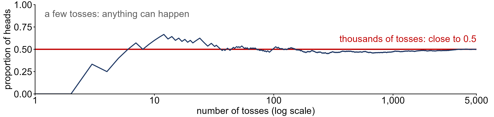
In the first few tosses the proportion jumps all over the place; over thousands of tosses it settles down to 0.5. The Swiss mathematician Jacob Bernoulli proved the first version of the law; it was published in 1713, after his death, in Ars Conjectandi. The statistician Karl Pearson checked it by hand, tossing a coin 24,000 times and getting 12,012 heads, a proportion of 0.5005.
The LLN is also how probabilities are found when outcomes are not equally likely: the relative frequency over many trials is an estimate of the probability, and the estimate gets better as \(n\) gets larger. That is exactly what the heights table did: \(P(T) \approx 0.28\) is a relative frequency.
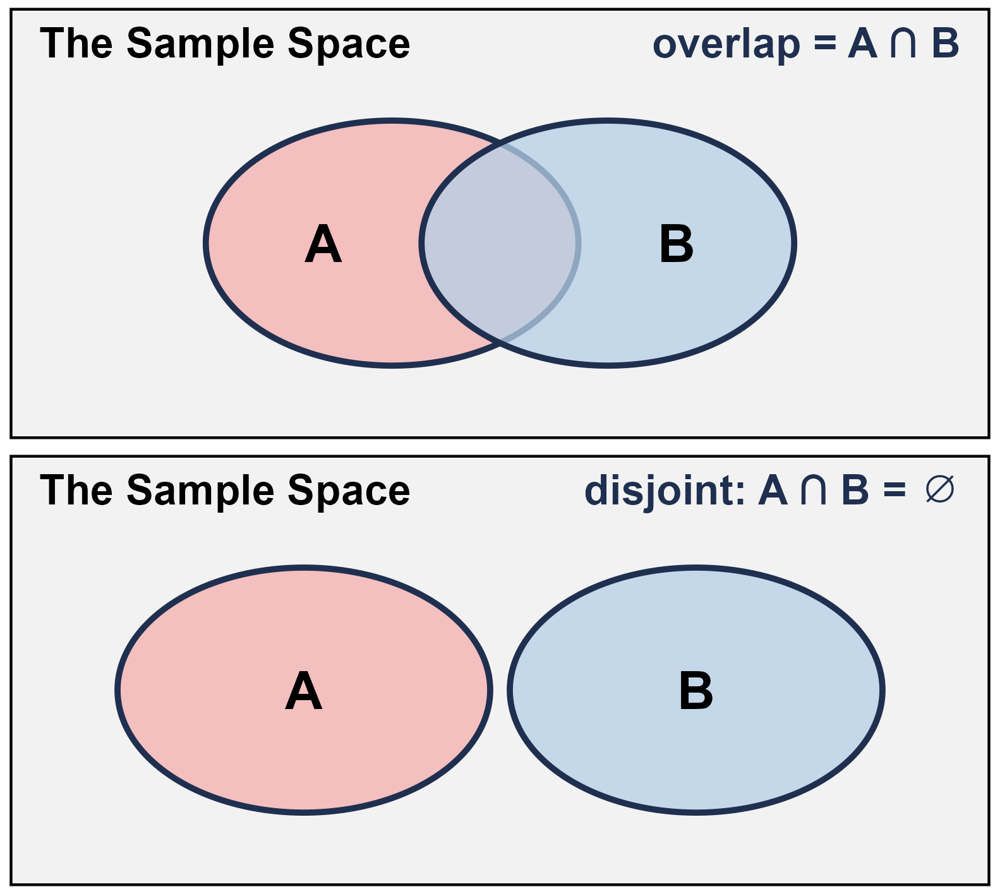
Two more rules for combining events:
Roll a fair six-sided die once.
Roll the die twice. The two rolls are independent.
Back to the heights table, with \(F\) = female and \(T\) = at least 70 inches.
No. Among all students 28% are at least 70 inches, but among the women only \(19/262 \approx 7\%\) are, so knowing a student is female changes the probability a lot. The multiplication rule would predict \(P(F) \cdot P(T) \approx 0.69 \cdot 0.28 \approx 0.19\), far from the actual \(P(F \cap T) \approx 0.05\).
Recall the two ways of drawing a sample from the Weeks 4-5 notes. Here a sample of 3 balls is drawn from a bag of 5:
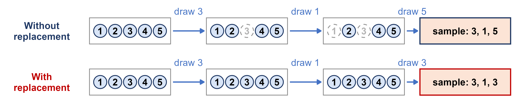
Are the draws independent?
Simple random samples are drawn without replacement, so strictly their draws are dependent. When the population is much larger than the sample, though, removing a few units barely changes what is left, and the draws behave almost exactly as if they were independent.
A standard deck has 52 cards, 4 of them aces. Draw two cards. What is the probability that both are aces?
Not putting the card back makes two aces less likely, because the first ace used up one of the four.
In statistics we usually record the outcome of a random trial as a number.
Toss a fair coin 3 times. There are \(2 \times 2 \times 2 = 8\) equally likely outcomes:
\[S = \{HHH, HHT, HTH, THH, HTT, THT, TTH, TTT\}\]
Let \(X\) be the number of heads. HTH gives \(X = 2\) and TTT gives \(X = 0\), so \(X\) can be 0, 1, 2 or 3.
For the three coin tosses, counting the outcomes that give each number of heads:
| \(x\) (heads) | Outcomes | Number of outcomes | \(P(x)\) |
|---|---|---|---|
| 0 | TTT | 1 | 1/8 |
| 1 | HTT, THT, TTH | 3 | 3/8 |
| 2 | HHT, HTH, THH | 3 | 3/8 |
| 3 | HHH | 1 | 1/8 |
Here \(1 + 3 + 3 + 1 = 8\) outcomes, so the probabilities add to \(8/8 = 1\).
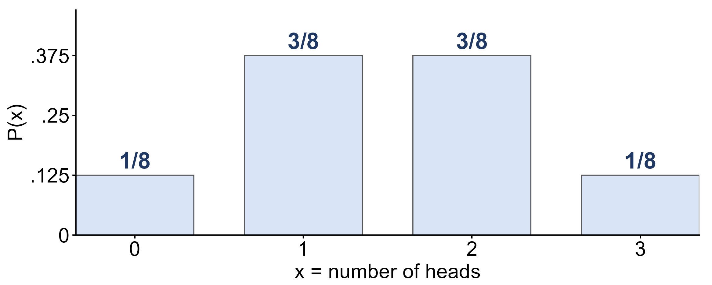
To find the probability of an event, add the probabilities of the values that make it up:
A probability distribution has a center and a spread, just like a distribution of data. The formulas weight each value by its probability instead of by how often it appeared in a sample.
The expected value is the long-run average of \(X\) over many repetitions, which is the law of large numbers again. It does not have to be a value \(X\) can actually take, and it is not a prediction for any single trial.
For the number of heads in three tosses:
| \(x\) | \(P(x)\) | \(x \cdot P(x)\) | \((x - \mu)^2 \cdot P(x)\) |
|---|---|---|---|
| 0 | 1/8 | 0(1/8) = 0.000 | (0 - 1.5)^2(1/8) = 0.281 |
| 1 | 3/8 | 1(3/8) = 0.375 | (1 - 1.5)^2(3/8) = 0.094 |
| 2 | 3/8 | 2(3/8) = 0.750 | (2 - 1.5)^2(3/8) = 0.094 |
| 3 | 1/8 | 3(1/8) = 0.375 | (3 - 1.5)^2(1/8) = 0.281 |
Adding the columns, \(\mu = 0 + 0.375 + 0.75 + 0.375 = 1.5\) heads, and \(\sigma^2 = 0.281 + 0.094 + 0.094 + 0.281 = 0.75\), so \(\sigma = \sqrt{0.75} \approx 0.87\) heads. Over many sets of three tosses the average number of heads is 1.5, even though no single set can have 1.5 heads.
A STAT 251 exam grade on the four-point scale (\(F = 0\), \(D = 1\), \(C = 2\), \(B = 3\), \(A = 4\)) is a random variable \(X\) for a student chosen at random. Suppose its distribution is:
| \(x\) | Grade | \(P(x)\) |
|---|---|---|
| 0 | F | 0.05 |
| 1 | D | 0.10 |
| 2 | C | 0.30 |
| 3 | B | 0.25 |
| 4 | A | 0.30 |
Next week we meet some named discrete distributions that come up again and again, starting with the Bernoulli and the binomial, and then return to the sampling distribution with the central limit theorem.
pnorm/qnorm.Data/central_park_temps.csv).